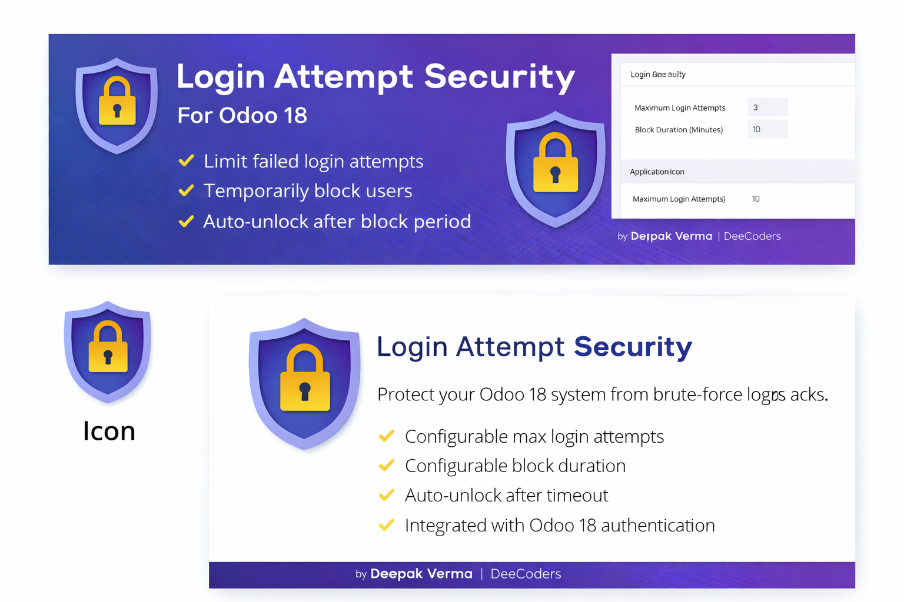
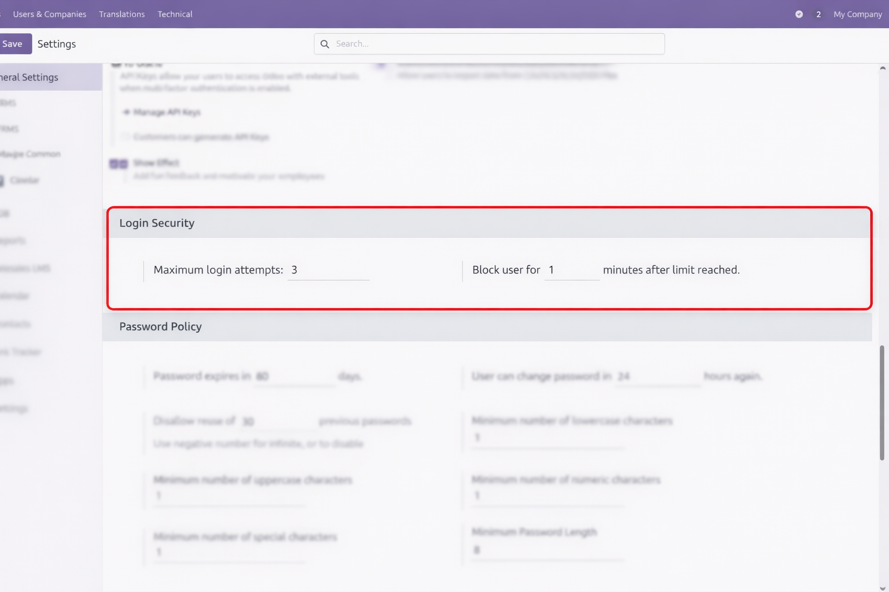
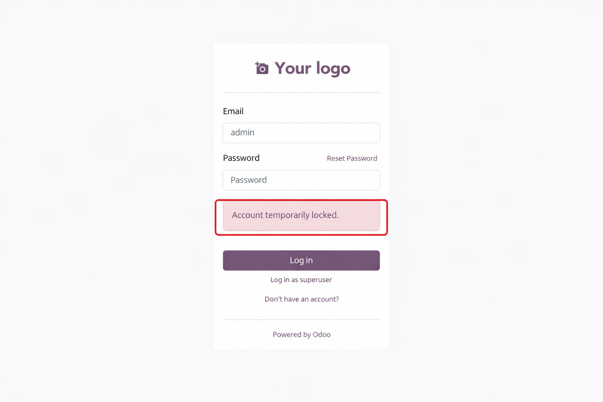

🔐 Login Attempt Security for Odoo 18

Protect your Odoo system from brute-force login attacks by limiting failed login attempts
and automatically blocking users for a configurable duration.
🚀 Key Highlights
- ✔ Protect Against Brute-Force Attacks
- ✔ Automatic Temporary Account Locking
- ✔ Configurable Login Attempt Limits
- ✔ Automatic Unlock After Timeout
- ✔ Lightweight & Upgrade-Safe
⚙ Configuration
Go to:
Settings → Users & Companies → Login Security
- Set maximum login attempts
- Set block duration
- Save configuration
📸 Login Security Settings Screen

🛡 How It Works
- User enters incorrect password.
- Failed attempts counter increases.
- Once the limit is reached, the account is temporarily locked.
- User cannot login even with correct password during block period.
- After timeout, account is automatically unlocked.
🚫 Blocked User Login Screen

💡 Why Use This Module?
Odoo Community Edition does not include built-in brute-force protection.
This module enhances your system security by preventing unlimited login attempts.
- Improves security posture
- Reduces risk of credential attacks
- Simple and lightweight
- No performance overhead
📦 Technical Details
- Compatible with Odoo 18 Community & Enterprise
- License: LGPL-3
- No external dependencies
- Clean integration with core authentication
👨💻 Author
Deepak Verma
DeeCoders
📧 Support: dpakverma789@gmail.com